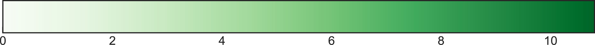

RESULTADOS
concentrado de resultados y datos generales
La metodología fue repetida 9 veces en diferentes sedes con participantes de diferente perfil y campo de trabajo, comprendiendo cada taller de 6 horas aproximadamente atendiendo en promedio de 30 a 40 asistentes por sede.
NUMERALIA GENERAL
| LOCALIDAD | SEDE | PERFIL ASISTENTES | ASISTENTES | PROPUESTAS |
|---|---|---|---|---|
| Progreso | Instituto Tecnológico Superior de Progreso | Estudiantes de ingeniería en Gestión Empresarial | 30 | 6 |
| Maxcanú | Instituto Tecnológico del Poniente | Estudiantes de técnico superior en Administración | 30 | 6 |
| Izamal | Universidad Tecnológico del Centro | Estudiantes de técnico superior en Turismo | 34 | 6 |
| Tizimín | Instituto Tecnológico de Tizimín. | Estudiantes de Ingeniería en Agronomía, Informática, Gestión Empresarial y Licenciatura en Administración | 36 | 6 |
| Valladolid | Instituto Tecnológico Superior de Valladolid | Profesores de Ingenierías en Sistemas, Ambiental, TICS y licenciaturas en Economía y Administración. | 17 | 2 |
| Tekax | Universidad Tecnológica regional del Sur | Estudiantes de TICS, Mecatrónica, Turismo, Mercadotecnia Emprendedores en Turismo, Chile habanero, Miel de abeja melipona, Tejido artesanal. | 26 | 5 |
| Ticul | CETIS #19 | Estudiantes de Técnico superior en Contabilidad | 46 | 6 |
| Mérida | Instituto Yucateco del Emprendedor | Emprendedores en general y representantes de instituciones locales. | 21 | 3 |
| Motul | CBTIS No. 80 | Estudiantes de programación, pequeños comerciantes y miembros del H.Ayuntamiento. | 34 | 4 |
| 262 | 44 | |||
Temas más abordados en los proyectos en general
ETAPA 1 - INSPIRACIÓN
Durante la primera etapa, los participantes lograron la identificación y jerarquización de 25 problemáticas -basadas en los ejes sectoriales del Plan Estatal de Desarrollo- de su propia comunidad. A continuación se presenta el porcentaje de las problemáticas priorizadas mencionadas por los participantes.
ETAPA 2 - IDEACIÓN
En la etapa 2 se realizó una lluvia de ideas a partir de las problemáticas previamente priorizadas. En el siguiente gráfico interactivo, se muestra una red que representa la relación entre los ejes sectoriales y los desafíos presentados por los participantes.
ETAPA 3 - IMPLEMENTACIÓN
Esta etapa se enfocó en el desarrollo de la idea en concreto por medio de un modelo canvas y el prototipado ágil de la idea. A continuación, se presenta la aplicación de los Objetivos de Desarrollo Sostenible de la ONU en las ideas de emprendimiento como valor agregado de las propuestas planteadas siendo lo más mencionados: Trabajo decente y crecimiento económico, Salud y bienestar, Educación de Calidad y Alianzas para lograr los objetivos.

ETAPA 4 - VISUALIZACIÓN
Esta etapa se basó en la síntesis y elaboración, tanto de esta plataforma web con el concentrado de resultados, como de un documento impreso que resuma toda la información y experiencias generadas por medio de la metodología.
resultados
| OBJETIVO | ESTRATEGIA | LÍNEA DE ACCIÓN | SEDE |
|---|---|---|---|
| Aumentar la independencia económica de la población del estado de Yucatán | Promover el uso de tecnología e innovación en el sector económico | Generar plataformas de crowdfunding para la agilización de búsqueda de financiamiento | Progreso |
| Disminuir la tasa de desempleo de los jóvenes en el estado de Yucatán | Poner en marcha un programa de capacitación y profesionalización | Desarrollar centros comunitarios para el empleo y profesionalización | Progreso |
| Fomentar alternativas a la pesca en época de veda en la población de ciudades y pueblos costeros de Yucatán | Fomentar la construcción de granjas acuícolas y de acuaponia | Construir granjas acuícolas para el desarrollo de productos marinos | Progreso |
| Transmitir información sobre planificación familiar | Estimular la planificación familiar para mejorar la calidad de vida de familias yucatecas | Desarrollar tecnologías para la conscientización y planificación familiar | Progreso |
| Mejorar el aprovechamiento de residuos y materias primas | Emprender un programa para la utilización del sargazo | Utilizar el sargazo para la generación de subproductos | Progreso |
| Incrementar el nivel se seguridad en los pueblos del estado | Fomentar la creación de emprendimientos en temas de seguridad y tecnología | Wearable como dispositivo de seguridad con GPS integrado | Progreso |
| Disminuir la tasa de desempleo de los jóvenes del estado | Poner en marcha un programa de capacitación y profesionalización | Desarrollar centros comunitarios para el empleo y profesionalización | Maxcanú |
| Incrementar la diversidad de los productos agrícolas del estado | Estimular nuevas tecnologías en la agricultura | Apoyar a emprendedores en el sector agrícola para diversificar hacia productos de valor agregado | Maxcanú |
| Aumentar la competitividad de los estudiantes en Yucatán | Poner en marcha un programa de capacitación de maestros en STEAM | Establecer centros de capacitación continua en STEAM para docentes | Maxcanú |
| Fomentar las prácticas de sustentabilidad en el sector empresarial | Emprender un programa de estímulos a empresas con prácticas sustentables | Apoyar a emprendedores para integrar modelos sostenibles en la industria | Maxcanú |
| Incrementar la rentabilidad del sector pesquero en el estado | Emprender un programa de estímulos a proyectos de investigación con posible impacto económico | Construir granjas acuícolas para el desarrollo de productos marinos | Maxcanú |
| Mejorar la calidad del servicio médico en el interior del estado | Poner en marcha un programa de capacitación y profesionalización | Establecer programas de capacitación del personal médico en el interior del estado | Maxcanú |
| Mejorar el ingreso de la población rural | Poner en marcha un programa de capacitación y profesionalización | Desarrollar centros comunitarios para el empleo y profesionalización | Izamal |
| Mejorar la infraestructura en pueblos y ciudades del estado | Poner en marcha un programa de mejora de infraestructura en el estado | Desarrollar tecnología para producir energía limpia | Izamal |
| Mejorar la infraestructura en pueblos y ciudades del estado | Poner en marcha un programa de mejora de infraestructura en el estado | Apoyar a empresas de base tecnológica que desarrollen técnicas o dispositivos la utilización de residuos urbanos | Izamal |
| Preservar y recrear la cultura maya en el arte y la educación | Fortalecer esfuerzos para integrar la cultura maya en el arte y la educación | Desarrollar programas culturales para difundir y recrear la cultura maya | Izamal |
| Mejorar el ingreso de la población rural | Poner en marcha un programa de capacitación y profesionalización | Desarrollar centros comunitarios para el empleo y profesionalización | Izamal |
| Incrementar el nivel se seguridad en los pueblos del estado | Fomentar la creación de emprendimientos en temas de seguridad y tecnología | Fomentar la implementación de planes de estudio relacionados con STEM | Tizimín |
| Preservar y recrear la cultura maya en el arte y la educación | Fortalecer esfuerzos para integrar la cultura maya en el arte y la educación | Desarrollar programas culturales para difundir y recrear la cultura maya | Tizimín |
| Incrementar la diversidad de los productos agrícolas del estado | Estimular nuevas tecnologías en la agricultura | Apoyar a emprendedores en el sector agrícola para diversificar hacia productos de valor agregado | Tizimín |
| Mejorar la calidad del servicio médico en el interior del estado | Estimular nuevas tecnologías en la agricultura | Desarrollar programas para sistematizar, integrar y aprovechar el conocimiento de herbolaria yucateca | Tizimín |
| Aumentar la independencia económica de la población del estado de Yucatán | Poner en marcha un programa de capacitación y profesionalización | Desarrollar centros comunitarios para el empleo y profesionalización | Tizimín |
| Mejorar el aprovechamiento de residuos y materias primas | Emprender un programa de estímulos a empresas con prácticas sustentables | Apoyar a empresas de base tecnológica que desarrollen técnicas o dispositivos la utilización de residuos urbanos | Tizimín |
| Fomentar el emprendimiento en los estudiantes universitarios | Diseñar nuevas convocatorias y plataformas de emprendimiento e innovación para universitarios | Fomentar proyectos de emprendimiento universitario | Valladolid |
| Incrementar el nivel se seguridad en los pueblos del estado | Fomentar la creación de emprendimientos en temas de seguridad y tecnología | Desarrollar y reforzar el sistema de multas automatizadas | Valladolid |
| Incrementar la diversidad de los productos agrícolas del estado | Estimular nuevas tecnologías en la agricultura | Apoyar a emprendedores en el sector agrícola para diversificar hacia productos de valor agregado | Tekax |
| Incrementar la producción de energía limpia en el estado | Promover el uso de tecnología e innovación en el sector económico | Desarrollar tecnología para producir energía limpia | Tekax |
| Fomentar el turismo sustentable en el estado | Estimular nuevas propuestas de turismo sostenible | Desarrollar competencias y exposiciones gastronómicas de cocina yucateca | Tekax |
| Mejorar el aprovechamiento de residuos y materias primas | Promover el uso de tecnología e innovación en el sector económico | Apoyar a empresas que desarrollen tecnologías para la reutilización del plástico. | Tekax |
| Mejorar los sistemas y canales de información y difusión de manera transversal | Promover el uso de tecnología e innovación en el sector gubernamental | Desarrollar un directorio y sistemas de información de productores y artistas en el estado | Tekax |
| Aumentar la independencia económica de la población del estado de Yucatán | Promover el uso de tecnología e innovación en el sector económico | Estimular la creación de consultoras de innovación para MIPyMEs | Tekax |
| Aumentar la independencia económica de la población del estado de Yucatán | Promover el uso de tecnología e innovación en el sector económico | Apoyar el desarrollo de apps y plataformas web | Ticul |
| Mejorar la infraestructura en pueblos y ciudades del estado | Poner en marcha un programa de mejora de infraestructura en el estado | Reforzar el sistema de alumbrado público en el interior del estado | Ticul |
| Mejorar la situación ambiental del estado | Emprender un programa de estímulos a empresas con prácticas sustentables | Apoyar a emprendedores para integrar modelos sostenibles en la industria | Ticul |
| Mejorar la situación de equidad de género del estado | Estimular nuevas propuestas culturales sostenibles | Desarrollar los programas para empoderar a mujeres y niñas a través del acceso a la cultura y tecnología | Ticul |
| Mejorar la infraestructura en pueblos y ciudades del estado | Poner en marcha un programa de mejora de infraestructura en el estado | Gestional la terminación de obras públicas | Ticul |
| Fomentar el turismo sustentable en el estado | Estimular nuevas propuestas de turismo sostenible | Apoyar iniciativas y emprendimientos de ecoturismo en las areas naturales del estado | Ticul |
| Fomentar las prácticas de sustentabilidad en el sector empresarial | Emprender un programa de estímulos a empresas con prácticas sustentables | Desarrollar sistemas de captación, tratamiento y purificación de agua | Mérida |
| Aumentar la independencia económica de la población del estado | Promover el uso de tecnología e innovación en el sector económico | Apoyar el desarrollo de apps y plataformas web | Mérida |
| Mejorar el aprovechamiento de residuos y materias primas | Emprender un programa de estímulos a empresas con prácticas sustentables | Consolidar programas de producción y consumo responsable en temas alimentarios | Mérida |
| Aumentar la competitividad de las empresas en el estado | Poner en marcha un programa de capacitación y profesionalización | Estimular la creación de consultoras de innovación para MIPyMEs | Motul |
| Incrementar el nivel se seguridad en los pueblos del estado | Fomentar la creación de emprendimientos en temas de seguridad y tecnología | Desarrollar dispositivos pesonales de seguridad | Motul |
| Aumentar la competitividad de los estudiantes en Yucatán | Promover el uso de tecnología e innovación en el sector económico | Apoyar el desarrollo de apps y plataformas web | Motul |
| Mejorar la calidad del servicio médico en el interior del estado | Poner en marcha un programa de capacitación y profesionalización | Establecer programas de capacitación del personal médico en el interior del estado | Motul |